Ejemplos de Tablas de Frecuencia
Ejemplo 1: Datos Cuantitativos Discretos
Se encuestó a 100 estudiantes sobre el número de materias reprobadas.
Datos
- 0,0,0,0,0,0,0,0,0,0
- 0,0,0,0,0,0,0,0,0,0
- 0,0,0,0,0,0,0,0,0,0
- 0,0,0,0,0,0,0,0,0,0
- 1,1,1,1,1,1,1,1,1,1
- 1,1,1,1,1,1,1,1,1,1
- 1,1,1,1,1,1,1,1,1,1
- 2,2,2,2,2,2,2,2,2,2
- 2,2,2,2,2,2,2,2,2,2
- 3,3,3,3,3,3,3,3,3,3
| Clase |
Frecuencia Absoluta |
Frecuencia Relativa |
Frecuencia Acumulada |
| 0 |
40 |
0.40 |
40.00 |
| 1 |
30 |
0.30 |
70.00 |
| 2 |
20 |
0.20 |
90.00 |
| 3 |
10 |
0.10 |
100.00 |
Interpretación verbal:
De los 100 estudiantes encuestados, 40 no han reprobado ninguna materia, lo que representa el 40% del grupo.
30 estudiantes han reprobado una materia (30%), mientras que 20 alumnos reprobaron dos materias (20%).
Solo 10 estudiantes, equivalentes al 10%, han reprobado tres materias.
Esto indica que la mayoría del grupo tiene buen desempeño académico, ya que más de la mitad presenta cero o una
materia reprobada.
Imágenes
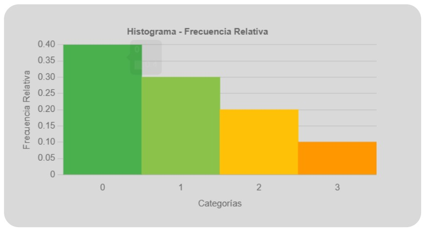
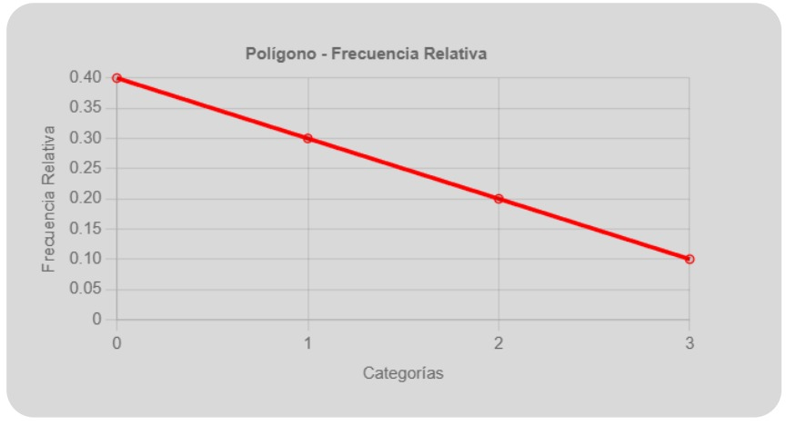
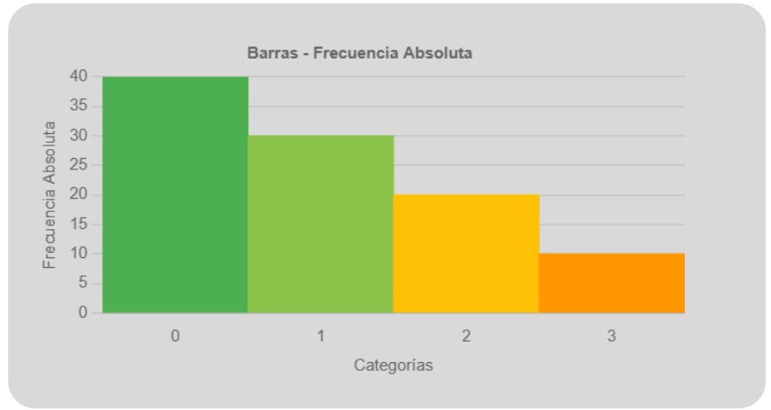
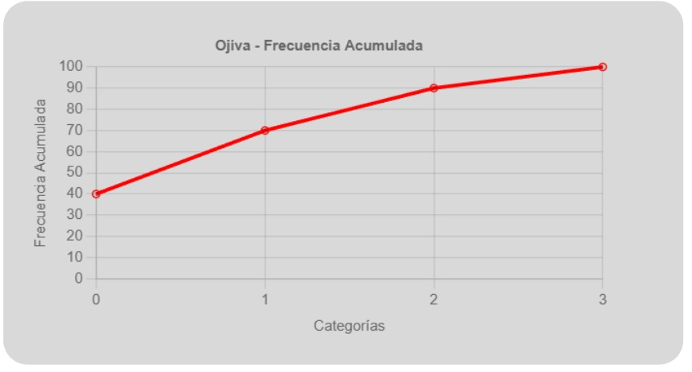
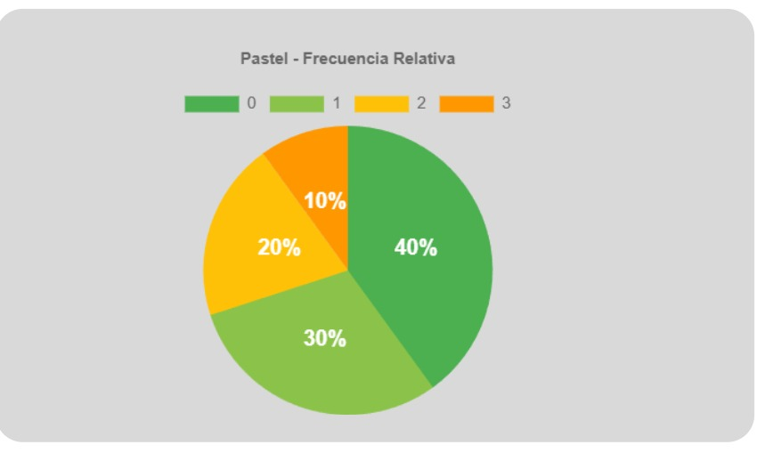
Ejemplo 2: Datos Cuantitativos Continuos
Tiempo en minutos que tardan 100 estudiantes en llegar a la escuela.
Datos
- 10,12,15,18,5,7,9,14,16,19
- 11,8,6,13,17,4,3,20,2,1
- 22,25,30,35,28,26,24,29,23,27
- 31,34,38,33,36,37,39,32,40,21
- 45,50,55,60,48,47,52,53,58,41
- 42,43,44,46,49,51,54,56,57,59
- 65,70,75,80,68,72,74,78,79,62
- 61,63,64,66,67,69,71,73,76,77
| Clase |
Límite Inferior |
Límite Superior |
Marca de Clase |
Frecuencia Absoluta |
Frecuencia Relativa |
Frecuencia Acumulada |
| 1 |
0 |
20 |
10 |
25 |
0.25 |
25.00 |
| 2 |
21 |
40 |
30.5 |
30 |
0.30 |
55.00 |
| 3 |
41 |
60 |
50.5 |
25 |
0.25 |
80.00 |
| 4 |
61 |
80 |
70.5 |
20 |
0.20 |
100.00 |
Interpretación verbal:
El intervalo con mayor frecuencia es el de 21 a 40 minutos, con 30 estudiantes (30%).
El 25% tarda entre 0 y 20 minutos, y otro 25% entre 41 y 60 minutos.
Finalmente, el 20% tarda entre 61 y 80 minutos.
Se observa que más de la mitad de los estudiantes (55%) tarda menos de 40 minutos en llegar a la escuela.
Imágenes
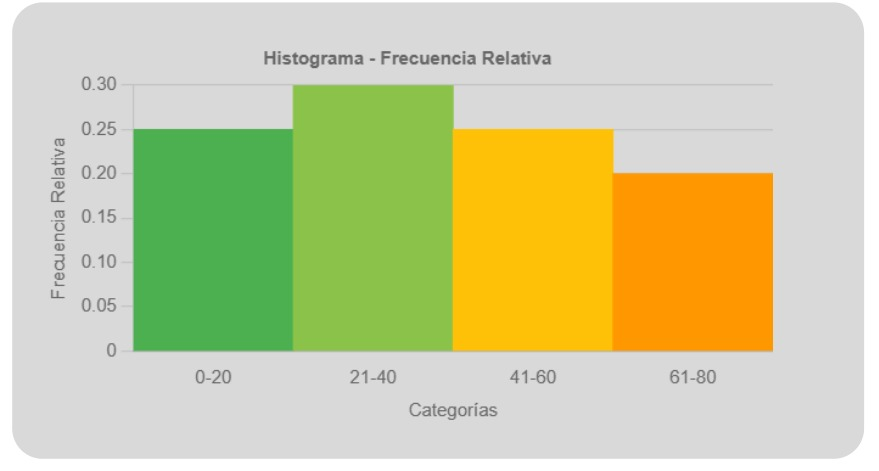
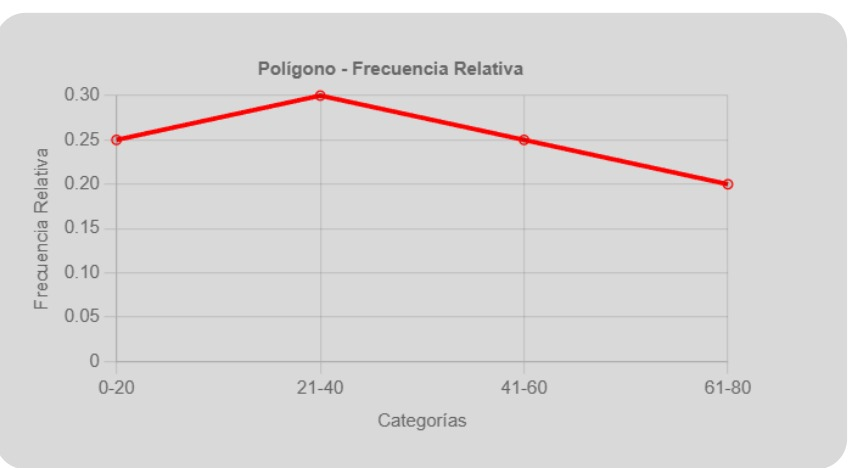
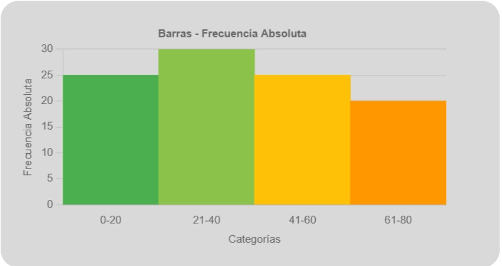
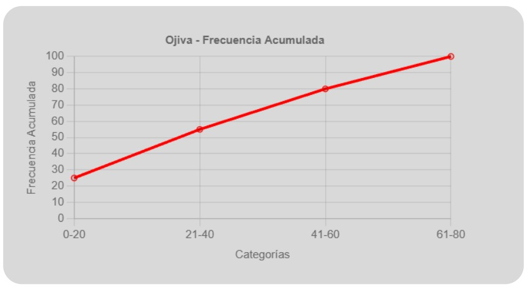
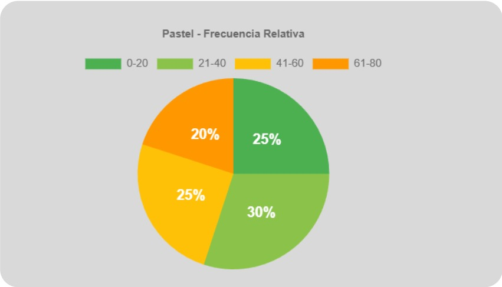
Ejemplo 3: Datos Cualitativos
Deporte favorito de 100 personas.
Datos
- Fútbol, Fútbol, Fútbol, Fútbol, Fútbol, Fútbol, Fútbol, Fútbol, Fútbol, Fútbol
- Fútbol, Fútbol, Fútbol, Fútbol, Fútbol, Fútbol, Fútbol, Fútbol, Fútbol, Fútbol
- Fútbol, Fútbol, Fútbol, Fútbol, Fútbol, Fútbol, Fútbol, Fútbol, Fútbol, Fútbol
- Fútbol, Fútbol, Fútbol, Fútbol, Fútbol
- Basquetbol, Basquetbol, Basquetbol, Basquetbol, Basquetbol
- Basquetbol, Basquetbol, Basquetbol, Basquetbol, Basquetbol
- Basquetbol, Basquetbol, Basquetbol, Basquetbol, Basquetbol
- Basquetbol, Basquetbol, Basquetbol, Basquetbol, Basquetbol
- Basquetbol, Basquetbol, Basquetbol, Basquetbol, Basquetbol
- Voleibol, Voleibol, Voleibol, Voleibol, Voleibol
- Voleibol, Voleibol, Voleibol, Voleibol, Voleibol
- Voleibol, Voleibol, Voleibol, Voleibol, Voleibol
- Voleibol, Voleibol, Voleibol, Voleibol, Voleibol
- Natación, Natación, Natación, Natación, Natación
- Natación, Natación, Natación, Natación, Natación
- Natación, Natación, Natación, Natación, Natación
- Natación, Natación, Natación, Natación, Natación
- Natación, Natación, Natación, Natación, Natación
| Clase |
Frecuencia Absoluta |
Frecuencia Relativa |
Frecuencia Acumulada |
| Fútbol |
35 |
0.35 |
35.00 |
| Basquetbol |
25 |
0.25 |
60.00 |
| Voleibol |
20 |
0.20 |
80.00 |
| Natación |
20 |
0.20 |
100.00 |
Interpretación verbal:
El deporte más mencionado fue Fútbol, con 35 personas (35%).
Le sigue Basquetbol con 25% de preferencia.
Voleibol y Natación presentan cada uno el 20% de las respuestas.
En conclusión, Fútbol es el deporte con mayor preferencia dentro del grupo encuestado.
Imágenes
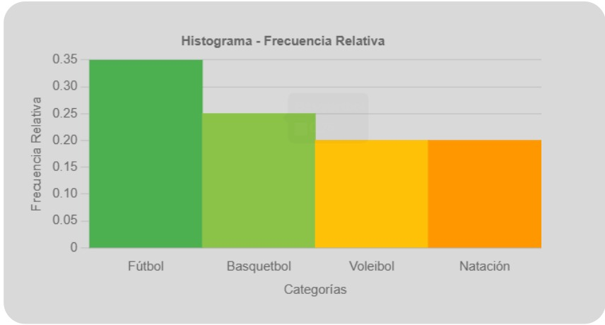
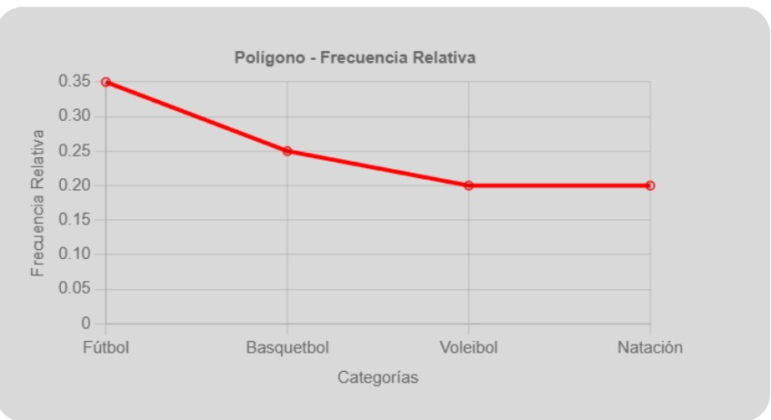
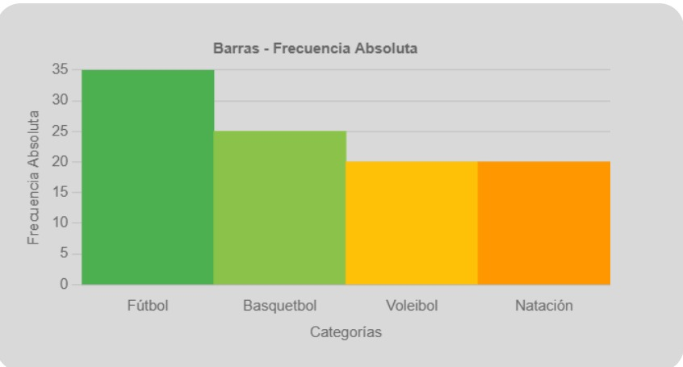
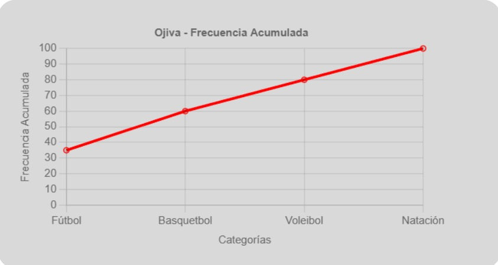
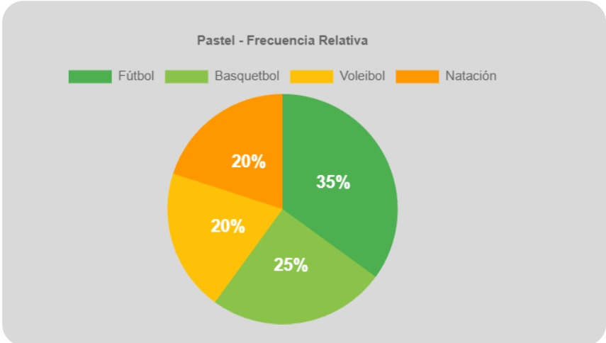